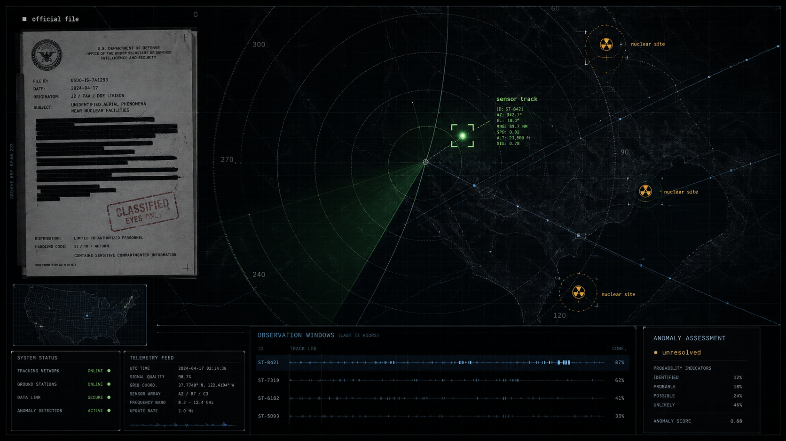

Annie Jacobsen: Nuclear War, CIA, KGB, Aliens, Area 51, Roswell & Secrecy | Lex Fridman Podcast #420
Source hub: index

On this page
Generated from Obsidian source note. Treat claims as research leads until corroborated by primary material.
Generated from the vault source. Use linked sources and cross-references as the verification trail.
Annie Jacobsen: Nuclear War, CIA, KGB, Aliens, Area 51, Roswell & Secrecy | Lex Fridman Podcast #420
Source hub: index
Area: x-files
User-linked timestamp: [00:32:19](https://www.youtube.com/watch?v=GXgGR8KxFao&t=1939s)
Why this belongs in X Files
This episode is a useful X Files source cluster because Annie Jacobsen connects national-security history, nuclear command systems, CIA secrecy, Area 51, UFO disinformation, ESP / psychical research, Roswell lore, KGB history and covert action. It is not a primary government document; it is a long-form interview with a journalist who has reported on classified programs, military secrecy and intelligence history.
What it contains
- A nuclear-war systems discussion: launch procedure, deterrence, tactical nukes, submarines, missiles, football, interceptors and escalation scenarios.
- A secrecy / intelligence-history layer: CIA covert action, assassination authorities, Cold War programs, KGB and information control.
- A direct X Files layer: alien civilizations, ESP, Area 51, UFO narratives, Roswell and disinformation.
- A methodological value: Jacobsen often separates what she has documentary/interview basis for from what remains belief, lore or unsupported extrapolation.
Chapter map
| Time | Chapter |
|---:|---|
| 0:00 | Introduction |
| 2:13 | Nuclear war |
| 6:57 | Launch procedure |
| 12:36 | Deterrence |
| 16:09 | Tactical nukes |
| 25:35 | Nuclear submarines |
| 28:35 | Nuclear missiles |
| 35:46 | Nuclear football |
| 44:53 | Missile interceptor system |
| 49:10 | North Korea |
| 55:46 | Nuclear war scenarios |
| 1:04:38 | Warmongers |
| 1:09:06 | President’s cognitive ability |
| 1:15:19 | Refusing orders |
| 1:23:17 | Russia and Putin |
| 1:28:23 | Cyberattack |
| 1:29:45 | Ground zero of nuclear war |
| 1:34:24 | Surviving nuclear war |
| 1:38:42 | Nuclear winter |
| 1:49:05 | Alien civilizations |
| 1:54:40 | Extrasensory perception |
| 2:08:25 | Area 51 |
| 2:12:23 | UFOs and aliens |
| 2:22:51 | Roswell incident |
| 2:29:30 | CIA assassinations |
| 2:48:23 | Navalny |
| 2:50:48 | KGB |
| 2:57:24 | Hitler and the atomic bomb |
| 3:01:27 | War and human nature |
| 3:04:53 | Hope |
X Files extraction
Area 51
Lex Fridman (02:08:26) You mentioned you wrote a book on Area 51. For people who don’t know, you’ve written a lot about security, the military, secrets, all of this kind of stuff. So Area 51 is one of the legendary centers of all of these kinds of topics. So high level first is what is Area 51, as you understand it, as you’ve written about the lore and the reality. Annie Jacobsen (02:09:01) I think everybody wants to know about Area 51, because it’s like this American enigma. It’s like to some people, it’s the Shangri-La of test bed aerospace programs, and to others, it’s the place of captured aliens and everything in between. I had the great fortune of interviewing 75 people who lived and worked at that base for extended periods of time, mostly leading up to the ’90s because everything since then is classified. So things get declassified after decades. Not everything but some. And that allows you to piece together stories. Lex Fridman (02:09:39) So you talked to a lot of people that worked there. What can you describe as the history of technological development that went on there? Annie Jacobsen (02:09:48) I mean, Area 51 is huge, by the way. It’s a top secret military facility in…
Operational read: Area 51 is framed primarily as a layered classified aerospace test environment: U-2, A-12 Oxcart / SR-71 lineage and nuclear-era reconnaissance. The useful angle for the vault is not “alien base” as conclusion, but “classified aerospace + public misidentification + deliberate secrecy/disinformation.”
UFOs and aliens
Lex Fridman (02:12:20) So there’s a lot of incredible technological work going on there. So the legend, the lore, like you said, aliens, were there ever aliens in Area 51 as you understand it? Annie Jacobsen (02:12:33) So I’ve interviewed hundreds of people. Lex Fridman (02:12:37) That worked there. Annie Jacobsen (02:12:38) Well, not just at Area 51, but in all the different national security and military intelligence and intelligence programs. And I personally have no reason to believe that aliens have ever visited Earth. That’s just me personally. Lex Fridman (02:12:53) Just at an Earth, period. Annie Jacobsen (02:12:55) I have no information that causes me to conclude that’s the case. Now, with that said, many of the primary players in this present day, there are aliens among us narrative, are in my phenomena book. I continue to communicate with a lot of these people. I’m talking about astrophysicists who fundamentally believe that there are aliens among us. So we beg to differ on that issue. Lex Fridman (02:13:28) But for you, in terms of doing research on government agencies that do top secret military work, I mean they would know. So you have interviewed a lot of people that have, at every layer of the onion, you don’t see evidence or a reason to believe that there was ever aliens or UFOs captured from out of this world. Annie Jacobsen (02:14:02) That is correct. And eve…
Operational read: Jacobsen explicitly says she has no evidence that aliens have visited Earth. Her X Files value is the counter-reading: UFO narratives can be artifacts of secret aircraft, strategic deception, CIA disinformation and recurring cultural myth. This is useful as a skeptical baseline against stronger UAP claims.
Roswell
(02:22:23) So if you believe that we’re alone in this universe, that’s a great motivator to build rockets and become multi-planetary and save ourselves, especially in the case of nuclear war, because otherwise, whatever this special sauce, this flame of consciousness will go out if we destroy ourselves on this earth. And for people like Elon, it’s too high of a probability that we destroy ourselves on earth not to try to become multi-planetary. In your book on Area 51, you propose an explanation that I think some people have criticized at the very end that this might’ve been a disinformation campaign from, I guess Stalin, that the Roswell incident was a remotely piloted plane with a quote, “grotesque child-sized aviator”. Just looking back at all that now, years later, what’s the probability that it’s true? What’s the probability it’s not? Annie Jacobsen (02:23:23) So you know I’ve never revealed to that sources. Lex Fridman (02:23:27) Yes. Annie Jacobsen (02:23:28) Did you know that? You want me to tell you? Lex Fridman (02:23:29) The source? Annie Jacobsen (02:23:29) Yeah. Lex Fridman (02:23:31) Who is the source? Annie Jacobsen (02:23:33) So before I say anything on that, let me speak to the question that you asked. So you asked me what’s the probability that that is still standing as an idea, 12, 13, 14 years later. So I continued to work with that source for years afterwar…
Operational read: Roswell is treated as a contested black-propaganda / disinformation possibility. Preserve it as a claim, not as established fact. Useful follow-up: compare Jacobsen’s version with official Air Force Roswell reports, The Black Vault archives and later UAP testimony.
Extrasensory perception / government programs
(01:54:41) I’d love to ask you about the extrasensory perception. You’ve written, like you said, the book Phenomena on the secret history of the US government’s investigations into extrasensory perception and psychokinesis. What are some of the more interesting extrasensory abilities that were explored by the government, and maybe just in general, ESP. What is it? What do you know of it? Annie Jacobsen (01:55:08) The book was so interesting to report because I spend so much time dealing with mechanized systems, machines, war machines, and yet the military and intelligence were and continue to be incredibly interested in the human mind, in consciousness. And so, if one is called hard science, what we’re talking about now is called squishy science. It was really interesting to delve into that world. It just couldn’t be farther from weapons and war, or could it? (01:55:40) And then, I really began thinking, well, before science and technology, sort of the supernatural ruled the world. The Oracle of Delphi in Greece exists before the common era rulers to go and beg to learn from the powers that be what was going to happen. All ESP programs, I think, pull from that origin story, the leader’s desire to know. And so, I really found it amazing that many people think these systems, or rather these programs, started in the ’70s. I learned they actually began right after World War II. That was because, and in my reporting, I find all things sort of always circle back to the Third Reich,…
Operational read: This connects directly to the vault’s Stargate / remote-viewing lane. Jacobsen places government ESP interest in a longer arc: post-WWII intelligence competition, Nazi occult files, Soviet/American anxiety loops and weaponization of the human mind.
Alien civilizations / consciousness
Lex Fridman (01:49:05) Let me ask you about the great filter. When you look up into our galaxy, into our universe, look up at the sky, do you think there’s other alien civilizations that are contending with some similar questions? Perhaps the reason we have not definitively seen alien civilizations is because the others have failed to find a solution to this great filter. Something like nuclear weapons. Annie Jacobsen (01:49:40) I’m not sure. I’m going to have to think about that question. But what does come to mind is an answer that was given to me similarly by Ed Mitchell, who went to the moon. He was the sixth man to walk on the moon. And so, his opinion, I think, might count a little more than mine on that subject because his lens is so much greater. (01:50:14) Mitchell was vilified when he got back from the moon because it became known that he believed in things like extrasensory perception and this kind of mystical, metaphysical way of looking at the world. He really suffered from that. I mean, he was ridiculed and he lost a lot of his career and his friends. But what he said to me in our interview about his trip home from the moon answers that great filter question, I think,…
Operational read: This section is more philosophical than evidentiary. It links nuclear self-destruction, the Great Filter, Edgar Mitchell, consciousness and humanity’s inner/outer life. Useful as a bridge between UAP culture and existential-risk framing.
CIA assassinations / covert action
Lex Fridman (02:29:06) And like you said, the programs both on the Soviet side and the American side, conflicting, I think is the term we used previously, ethically, morally, on all fronts. People have done some horrible things in the name of security. In your book, Surprise, Kill, Vanish, you write about the CIA and the so-called president’s third option. So first of all, first option being diplomacy and second option being war. So when diplomacy is inadequate and war is a terrible idea, we go to the third option. And this third option is about covert action, and it’s about assassination. So how much of that does the CIA do? Annie Jacobsen (02:30:04) That is open to debate. We know from the historical record that the CIA was heavily involved in assassination during the Cold War. That’s non-negotiable. Even the names of the programs that were assigned to perform assassinations are fascinating and now declassified, like Eisenhower’s, for example, was the Health Alteration Committee. Lex Fridman (02:30:29) Well, at least they have a sense of humor to this dark topic. Annie Jacobsen (02:30:33) Then the more modern names are targeted killing, executive action, targeted killing. I mean, drone striking is essentially assassination. And people jump up and down and say, “That’s not true.” Well, I spent quite a long time interviewing the CIA’s lead council, John Rizzo. He died recently.…
Operational read: Not paranormal, but important for the X Files intelligence-secrecy backbone: covert action, legal framing, executive authority, deniability and the way secret programs become normalized through bureaucratic language.
Critical reading
What this source is good for
- Mapping how intelligence secrecy and aerospace programs generate myths.
- Capturing Jacobsen’s claims and narrative framing for later comparison.
- Connecting Area 51, UFO lore, ESP, nuclear risk and CIA covert action in one reusable interview node.
What it does not prove
- It does not prove aliens visited Earth.
- It does not verify Roswell as an operation or hoax by itself.
- It does not provide primary-source evidence for each claim inside the interview.
- It should not be treated as equivalent to declassified documents, official reports or peer-reviewed research.
Follow-up research queue
- Compare with Jacobsen books:
Area 51,Phenomena,Surprise, Kill, Vanish,Nuclear War: A Scenario. - Add official sources: CIA U-2 / Oxcart history, Air Force Roswell reports, CIA UFO disinformation references.
- Cross-link with stargate-documentary-trilogy-index and future ESP / Phenomena notes.
- Build a
Lex Fridman Podcastsource index as more episodes are ingested.